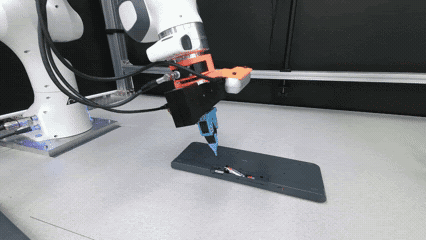
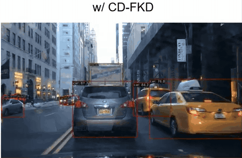
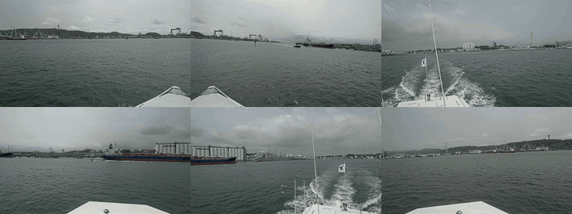
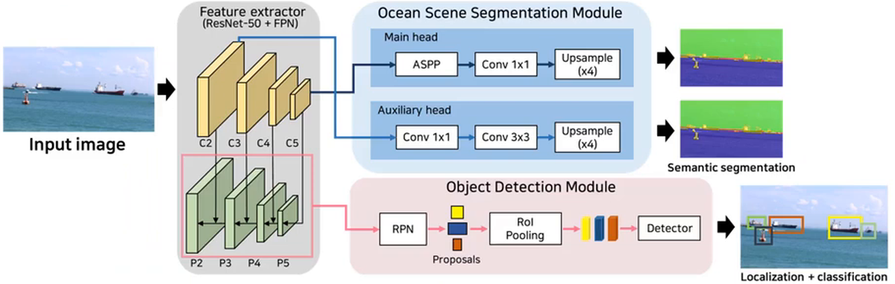
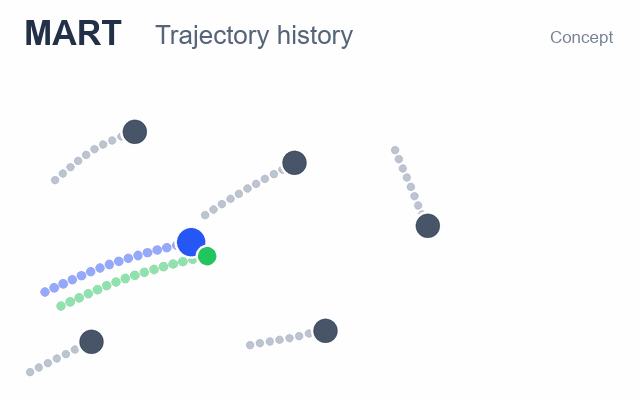
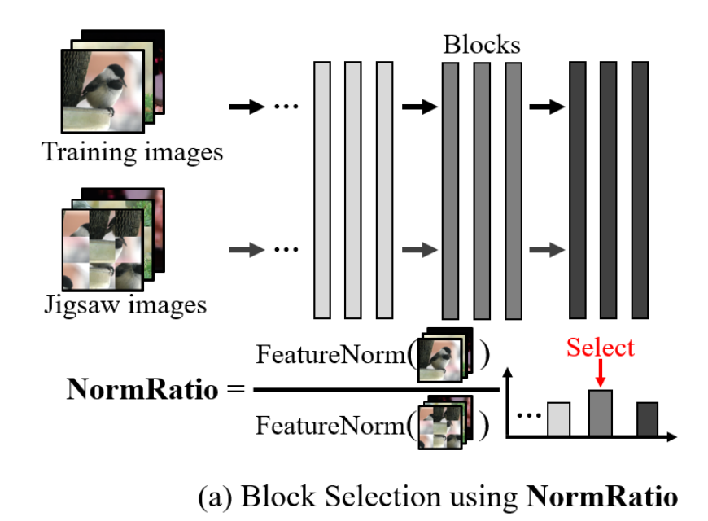
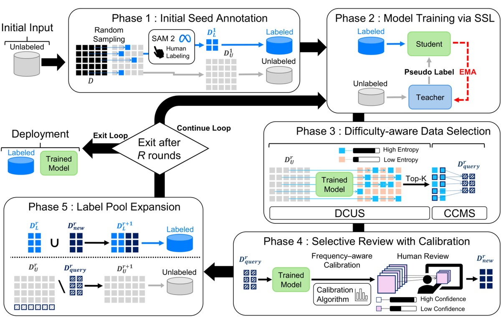

Publications
Complete publication list, with submitted and ongoing work listed separately.
International publications · Domestic publications · In submission · Work in progress Citation and venue metrics, where included, reflect the CV snapshot of 2026-11-02 . Journal impact factors and JCR quartiles use the years explicitly shown. Domestic publications omit citation counts.
International publications

ManipForce: Force-Guided Policy Learning with Frequency-Aware Representation for Contact-Rich Manipulation
Geonhyup Lee, Yeongjin Lee, Kangmin Kim, Seongju Lee , Sangjun Noh, Seunghyeok Back, Kyoobin Lee
2026 IEEE International Conference on Robotics and Automation (ICRA 2026)
Imitation Learning, Multimodal Policy, Vision Foundation Models (VFMs), Force/Torque Sensor
Paper · Website · Code
38.04% Acceptance Rate · Cited by 29

CD-FKD: Cross-Domain Feature Knowledge Distillation for Robust Single-Domain Generalization in Object Detection
Junseok Lee*, Sungho Shin*, Seongju Lee , Kyoobin Lee
2026 IEEE International Conference on Robotics and Automation (ICRA 2026)
Knowledge Distillation, Robust Object Detection, Single-Domain Generalization
Paper · Code
Detection demo: GIST AI Lab. · Source
38.04% Acceptance Rate · Cited by 1
4th Workshop on Maritime Computer Vision (MaCVi): Challenge Overview
Benjamin Kiefer et al. (including Seongju Lee )
2026 IEEE/CVF Conference on Computer Vision and Pattern Recognition Workshops (CVPRW 2026), pp. 8146–8156
Paper
Cited by 2

MV2: A Large-Scale 360-degree Multi-View Maritime Vision Dataset for Object Detection and Segmentation
Junseok Lee*, Jongwon Kim*, Seongju Lee *, Taeri Kim, and Kyoobin LeeCo-first author
The 2025 IEEE/RSJ International Conference on Intelligent Robots and Systems (IROS 2025)
Paper · Website

Robust Maritime Object Detection under Adverse Conditions via Joint Semantic Learning without Extra Computational Overhead
Junseok Lee, Seongju Lee , Jongwon Kim, Jumi Park, and Kyoobin Lee
The 2025 IEEE/RSJ International Conference on Intelligent Robots and Systems (IROS 2025)
Paper
Method diagram: GIST AI Lab presentation. · Source · Demo clip
46% Acceptance Rate · Cited by 2
3rd Workshop on Maritime Computer Vision (MaCVi) 2025: Challenge Results
Benjamin Kiefer et al. (including Seongju Lee )
2025 IEEE/CVF Winter Conference on Applications of Computer Vision Workshops (WACVW 2025), pp. 1542–1569
Paper
Cited by 11

MART: MultiscAle Relational Transformer Networks for Multi-agent Trajectory Prediction
Seongju Lee , Junseok Lee, Yeonguk Yu, Taeri Kim, and Kyoobin LeeFirst author
The 18th European Conference on Computer Vision (ECCV 2024), Poster
Graph Neural Networks (GNNs), Hypergraph Transformer
Paper · Code
27.9% Acceptance Rate · Cited by 80
Buoy Light Detection and Pattern Classification for Unmanned Surface Vehicle Navigation
Junseok Lee, Taeri Kim, Seongju Lee , Jumi Park, and Kyoobin Lee
The 21st International Conference on Ubiquitous Robots (UR 2024)
Cited by 2

Block Selection Method for Using Feature Norm in Out-of-Distribution Detection
Yeonguk Yu, Sungho Shin, Seongju Lee , Changhyun Jun, and Kyoobin Lee
2023 IEEE/CVF Computer Vision and Pattern Recognition Conference (CVPR 2023), Poster
Paper · Code
Figure 2(a), original paper.
25.8% Acceptance Rate · Cited by 82
GYM-Net: Graphical Y-branched Multi-tasking Network for Trajectory Prediction
Taeri Kim, Junseok Lee, Seongju Lee , and Kyoobin Lee
The 22nd International Conference on Control, Automation and Systems (ICCAS 2022)
Vessel Trajectory Forecasting on Naval Warfare Simulation via CVAE-based Model
Seongju Lee *, Yeonguk Yu*, Junseok Lee, Jumi Park, Changhyun Jun, and Kyoobin LeeCo-first author
The 9th International Conference on Robot Intelligence Technology and Applications (RiTA 2021)
Real-time Vibro-Acoustical Feedback for the Reality in Game by Detecting the Gun-Sound using Simple Convolutional Neural Network
Sungho Shin, Seongju Lee , Changhyun Jun, and Kyoobin Lee
The 8th International Conference on Smart Media & Application (SMA 2019)

Human-efficient annotation system via active semi-supervised learning and selective review
Jongwon Kim, Youmin Park, Seunghyeok Hyun, Yunjae Heo, Seongju Lee , Yeonguk Yu, and Kyoobin Lee
Intelligent Systems with Applications, Vol. 31, Article 200701, 2026
Paper
Figure 1, original paper.
JCR 2025 Q1
Automated diagnosis for extraction difficulty of maxillary and mandibular third molars and post-extraction complications using deep learning
Junseok Lee, Jumi Park, Seongju Lee , Seong-Yong Moon, and Kyoobin Lee
Scientific Reports, 2025
Paper
JIF 4.9 (2025, Q1) · Cited by 6
SleePyCo: Automatic Sleep Scoring with Feature Pyramid and Contrastive Learning
Seongju Lee , Yeonguk Yu, Seunghyeok Back, Hogeon Seo, and Kyoobin LeeFirst author
Expert Systems with Applications, 2024
Paper · Code
JIF 9.4 (2025, Q1) · Cited by 107
BattleSound: A Game Sound Benchmark for the Sound-Specific Feedback Generation in a Battle Game
Sungho Shin, Seongju Lee , Changhyun Jun, and Kyoobin Lee
Sensors, 2023
Paper · Website
JIF 4.0 (2025, Q2) · Cited by 1
Robust Skin Disease Classification by Distilling Deep Neural Network Ensemble for the Mobile Diagnosis of Herpes Zoster
Seunghyeok Back*, Seongju Lee *, Sungho Shin, Yeonguk Yu, Taekyeong Yuk, Saepomi Jong, Seungjun Ryu, Kyoobin LeeCo-first author
IEEE Access, 2021
Paper
JIF 4.2 (2025, Q2) · Cited by 80
Self-Supervised Transfer Learning from Natural Images for Sound Classification
Sungho Shin, Jongwon Kim, Yeonguk Yu, Seongju Lee , Kyoobin Lee
Applied Sciences, 2021
Paper
JIF 2.9 (2025, Q2) · Cited by 28
Pilot study of a single-channel EEG seizure detection algorithm using machine learning
Seungjun Ryu, Seunghyeok Back, Seongju Lee , Hyeon Seo, Chanki Park, Kyoobin Lee, Dong-Seok Kim
Child's Nervous System, 2021
Paper
JIF 1.3 (2025, Q3) · Cited by 24
Intra- and inter-epoch temporal context network (IITNet) using sub-epoch features for automatic sleep scoring on raw single-channel EEG
Hogeon Seo*, Seunghyeok Back*, Seongju Lee *, Deokhwan Park, Tae Kim, Kyoobin LeeCo-first author
Biomedical Signal Processing and Control, 2020
Paper · Code
JIF 5.7 (2025, Q2) · Cited by 313
Object Detection for Understanding Assembly Instruction Using Context-aware Data Augmentation and Cascade Mask R-CNN
Joosoon Lee, Seongju Lee , Seunghyeok Back, Sungho Shin, and Kyoobin Lee
arXiv:2101.02509, 2021
Paper
Cited by 10
* Equal contribution.
Domestic publications
다중 객체의 경로 정보를 이용한 GNN 기반의 객체 분류 알고리즘 개발
이상범, 이성주, 이준석, 김태리, 이규빈
제19회 한국로봇종합학술대회, KRoC 2024
단일 물체 영역 탐지를 위한 지식 증류 기반의 약지도 학습 프레임워크 개발
김종원, 노상준, 이성주, 이규빈
2023 ICROS-KROS 호남제주 그랜드 종합 학술대회
확장된 길이의 다중 채널 신호를 이용한 수면 단계 분류 모델 지식 증류 기법
최소원, 이성주, 유연국, 이규빈
2023 ICROS-KROS 호남제주 그랜드 종합 학술대회
Self-attention을 이용한 치과 파노라마 이미지에서의 치아 인스턴스 분할 성능 향상
박주미, 이준석, 이성주, 유연국, 이규빈
제17회 한국로봇종합학술대회, KRoC 2022
물품조립 AI - 조립설명서 기반 로봇의 작업계획 생성 시스템
백승혁, 신성호, 강래영, 이성주, 이주순, 육태경, 전창현, 김종원, 유연국, 박성호, 윤준호, 이준석, 이규빈
로봇과 인간 제18권 (2021)
커리큘럼 학습을 통한 원시 단일 채널 EEG의 자동 수면 단계 분류 성능 향상
박덕환, 이성주, 백승혁, 이규빈
제36회 제어로봇시스템학회, ICROS 2021
표면 법선 벡터 추정 정보를 이용한 2D 와이어프레임 도면 내 개체분할 성능 향상
이성주, 전창현, 강래영, 이규빈First author
제16회 한국로봇종합학술대회, KRoC 2021
조립설명서에서 구체적인 조립 설명 생성을 위한 문서 분할 데이터셋 구축
이주순, 육태경, 신성호, 백승혁, 이성주, 강래영, 최승준, 이규빈
제15회 한국로봇종합학술대회, KRoC 2020
UWB Radar를 이용한 지능형 호흡 추정 및 무호흡 판별
박덕환, 서호건, 이성주, 이규빈
제15회 한국로봇종합학술대회, KRoC 2020
CRNN구조를 활용한 뇌전도 신호 기반 수면 단계 분류
이성주, 백승혁, 서호건, 이규빈First author
제14회 한국로봇종합학술대회, KRoC 2019
In submission
Rethinking Deformable Convolution as an Adapter with Cross-layer Weight Sharing for Robust Semantic Segmentation in the Wild
Seongju Lee , Raeyoung Kang, Sangbeom Lee, Sangjun Noh, Yeonguk Yu, Junseok Lee, and Kyoobin LeeFirst author
In Submission. Target Journal: IEEE Robotics and Automation Letters
First Prize in the USV-based Obstacle Segmentation Challenge at the 3rd Maritime Computer Vision Workshop
Vision Foundation Models (VFMs), Domain Generalized Semantic Segmentation (DGSS), Deformable Convolution Networks (DCNs), Parameter-Efficient Fine-Tuning (PEFT)
Work in progress
Sensing and Acting Like Human: Learning Contact-Rich Precision Skills from Human-Guided Demonstrations
Multimodal Bimanual Action Policy Model, Cross-Modal Alignment of Vision and Force–Torque